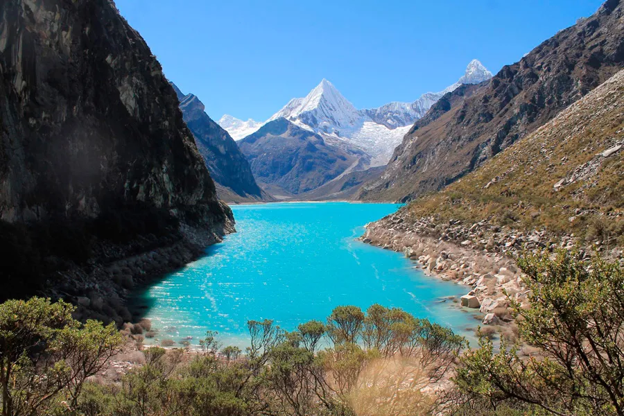
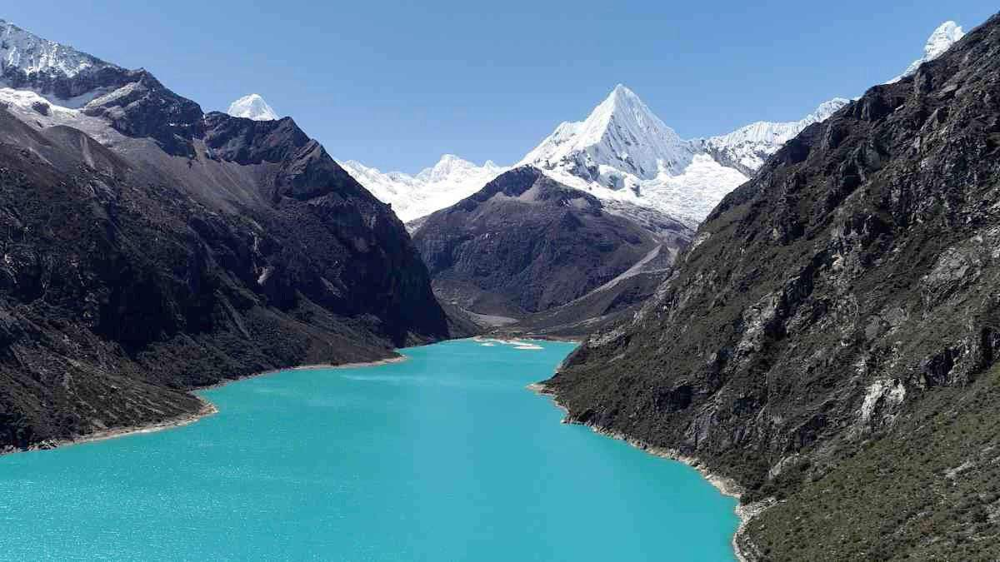

⛰️ Parque Nacional Huascarán - Patrimonio Natural 🌿
El Nevado Huascarán

- La montaña más alta del Perú con 6,768 m s. n. m.
- Parte de la Cordillera Blanca en los Andes peruanos.
- Atractivo principal para montañistas y aventureros.
Lagunas Glaciares

- Destacan las lagunas de Llanganuco (Chinancocha y Orconcocha).
- Aguas turquesas rodeadas de pinos y montañas nevadas.
- Ideales para paseos, fotografías y contemplación.
Flora y Fauna

- Hogar de especies como el cóndor andino, taruca y oso de anteojos.
- Flora única como la Puya Raimondi, la planta bromeliácea más grande del mundo.
- Declarado Reserva de la Biosfera por la UNESCO en 1977.
Pueblos y Cultura

- Alrededor del parque se encuentran pueblos como Yungay, Caraz y Huaraz.
- Se practican tradiciones andinas, festividades y artesanías locales.
- El turismo vivencial permite conocer su gastronomía y costumbres.